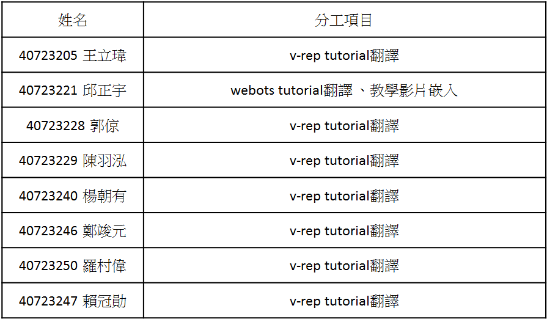
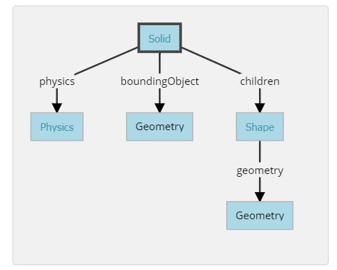
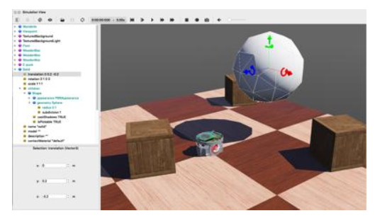
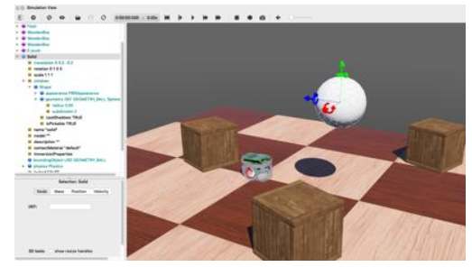
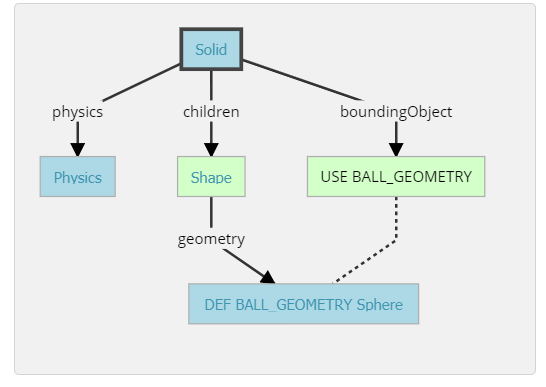
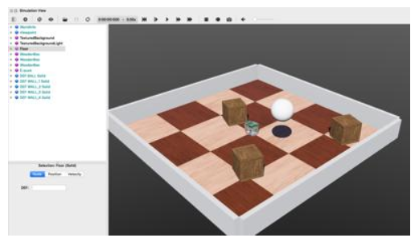

w13-w15 <<
Previous Next >> 電子書整理
W17 協同任務
分配表:

.v-rep tutorial : Building a clean model tutorial
At this stage we can start to divide the robot into separate links (remember, we currently have only a single shape for the whole robot). You can do this in two different ways:
在這一階段，可以開始將機器人劃分為單獨的鏈接（目前整個機器人只有一個形狀）。 可以通過兩種不同的方式執行此操作：
1. Automatic mesh division: this function, which was already described in previous section, will inspect the shape and generate a new shape for all elements that are not linked together via a common edge. This does not always work, but is always worth a try. The function can be accessed with [Menu bar --> Edit --> Grouping/merging --> Divide selected shapes].
1.自動網格劃分：此功能已在上一節中進行了描述，它將檢查形狀並為未通過公共邊鏈接在一起的所有元素生成新形狀。 這並不總是有效，但是值得嘗試的。 可以通過[菜單欄->編輯->分組/合併->分割所選形狀]叫出該功能。
2.Manual mesh division: via the the triangle edit mode, you can manually select the triangles than logically belong together, then click Extract shape. This will generate a new shape in the scene. Delete the selected triangles after that operation.
2.手動網格劃分：通過三角形編輯模式，您可以手動選擇不屬於邏輯的三角形，然後點擊“提取形狀”。 這將在場景中生成新形狀。 完成該操作後，刪除選定的三角形。
In the case of our mesh, method 1 worked fine:
對於我們的網格，方法1可以正常工作：

[Divided mesh]
Now, we could further refine/simplify individual shapes. Sometimes also, a shape might look better if its convex hull is used instead. Othertimes, you will have to use several of above's described techniques iteratively, in order to obtain the desired result. Take for instance following mesh:
現在，我們可以進一步細化/簡化單個形狀。 有時，如果改用凸殼，形狀可能會看起來更好。 有時，您將不得不反複使用上述幾種技術，以獲得所需的結果。 以以下網格為例：

[Imported mesh]
The problem with above's shape is that we cannot simplify it nicely, because of the holes it contains. where we can extract individual elements that logically belong to the same convex sub-entity. This process can take several iterations: we first extract 3 approximate convex elements. For now, we ignore the triangles that are part of the two holes. While editing a shape in the shape edit mode, it can be convenient to switch the visibility layers, in order to see what is covered by other scene items.
上面形狀的問題是，由於其中包含孔，我們無法很好地簡化它。在這裡我們可以提取邏輯上屬於同一個凸子實體的單個元素。此過程可能需要進行多次迭代：我們首先提取3個近似凸元素。 現在，我們忽略作為兩個孔的一部分的三角形。 在形狀編輯模式下編輯形狀時，可以方便地切換可見性圖層，以查看其他場景項所覆蓋的內容。

Now we can erase the triangles that are part of the holes. Finally, we extract the convex hull individually for the 3 shapes, then merge them back together with [Menu bar --> Edit --> Grouping/Merging --> merge selected shapes]:
現在我們可以除作為孔的一部分的三角形。 最後，我們分別提取3種形狀的凸包，然後將其與[菜單欄->編輯->分組/合併->合併所選形狀]合併在一起：

We can enable/disable edge display for each shape. We can also specify an angle that will be taken into account for the edge display.Those parameters, and a few others such as the shape color, can be adjusted in the shape properties. In this tutorial we have only dealt with simple shapes up to now: a simple shape has a single set of visual attributes (i.e. one color, one shading angle, etc.). If you merge two shapes, then the result will be a simple shape.
我們可以啟用/禁用每種形狀的邊緣顯示。我們還可以指定邊緣顯示時要考慮的角度。這些參數以及其他一些參數（例如形狀顏色）可以在形狀屬性中進行調整，在本教程中，我們僅處理簡單的形狀：簡單的形狀具有一組視覺屬性（即一種顏色，一個陰影角度等），如果合併兩個形狀，則結果將是一個簡單的形狀。
In next step, we can merge elements that logically belong together. Then we change the visual attributes of the various elements.Then, we select all the shapes that have the same visual attributes, then control-select the shape that was already adjusted
在下一步中，我們可以合併邏輯上屬於一起的元素，然後，我們更改各種元素的視覺屬性。再來，我們選擇所有具有相同視覺屬性的形狀，然後控制選擇已調整的形狀。

Now we can group the shapes that are part of the same link with [Menu bar --> Edit --> Grouping/merging -> Group selected shapes]. We end up with 7 shapes: the base of the robot (or base of the robot's hierarchy tree), and 6 mobile links.
現在，我們可以使用[菜單欄->編輯->分組/合併->分組所選形狀]對屬於同一鏈接的形狀進行分組。我們最終得到7個形狀：機器人的基礎（或機器人的層次結構樹的基礎）和6個移動鏈接。

When a shape is created or modified, CoppeliaSim will automatically set its reference frame position and orientation. A shape's reference frame will always be positioned at the shape's geometric center. The frame orientation will be selected so that the shape's bounding box remains as small as possible.
創建或修改形狀時，CoppeliaSim將自動設置其參考框架的位置和方向。 形狀的參考框架將始終位於形狀的幾何中心。 將選擇框架方向，以便形狀的邊界框保持盡可能小。
We rename the new shape (with a double-click on its name in the scene hierarchy) as robot_dyn, assign it to visibility layer 9, then copy it to the original scene.
我們將新形狀重命名（在場景層次中雙擊其名稱）為robot_dyn，將其分配給可見性層9，然後將其複製到原始場景。
The rest of the links will be modelled as convex shapes, or compound convex shapes.
其餘鏈接將建模為凸形或複合凸形。
We now select the first mobile link (i.e. object robot_link1) and generate a convex shape from it with [Menu bar --> Add --> Convex hull of selection].
現在，我們選擇第一個移動鏈接（即對象robot_link1），並使用[菜單欄->添加->選擇的凸包]從中生成凸形。
We rename it to robot_link_dyn1 and assign it to visibility layer 9.
我們將其重命名為robot_link_dyn1並將其分配給可見性層9。
When extracting the convex hull doesn't retain enough details of the original shape, then you could still manually extract several convex hulls from its composing elements, then group all the convex hulls with [Menu bar --> Edit --> Grouping/Merging --> Group selected shapes].
當提取凸包並沒有保留足夠的原始形狀細節時，您仍然可以手動從其組成元素中提取多個凸包，然後將所有凸包與[菜單欄->編輯->分組/合併->對選定形狀進行分組]。
If that appears to be problematic or time consuming, then you can automatically extract a convex decomposed shape with [Menu bar --> Add --> Convex decomposition of selection...]:
如果這似乎有問題或很耗時，則可以使用[菜單欄->添加->選擇的凸分解...]自動提取凸分解的形狀：

[Original shape, and convex shape pendant]
[原始形狀和凸形吊墜]

[Original shape, and convex decomposed shape pendant]
[原始形狀和凸形分解形狀吊墜]
We now repeat the same procedure for all remaining robot links. Once that is done, we attach each visible shape to its corresponding invisible dynamic pendant. We do this by selecting first the visible shape, then via control-click selecting its dynamic pendant then [Menu bar --> Edit --> Make last selected object parent]. The same result can be achieved by dragging the visible shape onto its dynamic pendant in the scene hierarchy:
現在，我們對所有剩餘的機器人鏈接重複相同的過程。完成後，我們將每個可見的形狀附加到其相應的不可見的動態吊墜上。為此，我們先選擇可見的形狀，然後按住Control鍵並單擊以選擇其動態吊墜，然後選擇[菜單欄->編輯->將最後選擇的對象設為父對象]。通過將可見形狀拖動到場景層次中的動態吊墜上，可以實現相同的結果：

[Visible shapes attached to their dynamic pendants]
[可見的形狀附加到動態吊墜上]
We still need to take care of a few things: first, since we want the dynamic shapes only visible to the physics engine, but not to the other calculation modules, we uncheck all object special properties for the dynamic shapes, in the object common properties.
我們仍然需要注意一些事項：首先，由於我們希望動態形狀僅對物理引擎可見，而對其他計算模塊不可見，因此在對象通用屬性中取消選中動態形狀的所有對象特殊屬性。
Then, we still have to configure the dynamic shapes as dynamic and respondable. We do this in the shape dynamics properties. Select first the base dynamic shape (i.e. robot_dyn), then check the Body is respondable item. Enable the first 4 Local respondable mask flags, and disable the last 4 Local respondable mask flags: it is important for consecutive respondable links not to collide with each other. For the first mobile dynamic link in our robot (i.e. robot_link_dyn1), we also enable the Body is respondable item, but this time we disable the first 4 Local respondable mask flags, and enable the last 4 Local respondable mask flags. We repeat the above procedure with all other dynamic links, while always alternating the Local respondable mask flags: once the model will be defined, consecutive dynamic shapes of the robot will not generate any collision response when interacting with each other. Try to always end up with a construction where the dynamic base of the robot, and the dynamic last link of the robot have only the first 4 Local respondable mask flags enabled, so that we can attach the robot to a mobile platform, or attach a gripper to the last dynamic link of the robot without dynamic collision interferences.
然後，我們仍然必須將動態形狀配置為動態且可響應的。我們在形狀動力學屬性中執行此操作。首先選擇基本動態形狀（即robot_dyn），然後檢查“主體是可響應的”項。啟用前四個“本地可響應掩碼”標誌，並禁用後四個“本地可響應掩碼”標誌：對於連續的可響應鏈接不要彼此衝突非常重要。對於我們機器人中的第一個移動動態鏈接（即robot_link_dyn1），我們還啟用了“身體可響應”項，但是這次我們禁用了前4個“本地可響應掩碼”標誌，並啟用了後4個“本地可響應掩碼”標誌。我們對所有其他動態鏈接重複上述過程，同時始終交替使用Local Responsible Mask標誌：一旦定義了模型，則連續的機器人動態形狀在彼此交互時不會產生任何碰撞響應。嘗試始終以這樣一種構造結束：機器人的動態基礎和機器人的動態最後一個鏈接僅啟用了前4個“本地可響應掩碼”標誌，以便我們可以將機器人附加到移動平台，或附加一個抓取器連接到機器人的最後一個動態鏈接，而沒有動態碰撞干擾。
Finally, we still need to tag our dynamic shapes as Body is dynamic. We do this also in the shape dynamics properties. We can then enter the mass and inertia tensor properties manually, or have those values automatically computed (recommended) by clicking Compute mass & inertia properties for selected convex shapes. Remember also this and that dynamic design considerations. This dynamic base of the robot is a special case: most of the time we want the base of the robot (i.e. robot_dyn) to be non-dynamic (i.e. static), otherwise, if used alone, the robot might fall during movement. But as soon as we attach the base of the robot to a mobile platform, we want the base to become dynamic (i.e. non-static). We do this by enabling the Set to dynamic if gets parent item, then disabling the Body is dynamic item. Now run the simulation: all dynamic shapes, except for the base of the robot, should fall. That attached visual shapes will follow their dynamic pendants.
最後，我們仍然需要將動態形狀標記為“身體是動態的”。我們也在形狀動力學屬性中執行此操作。然後，我們可以手動輸入質量和慣性張量屬性，或者通過單擊“計算選定凸形的質量和慣性屬性”來自動計算（推薦）那些值。還請記住這一點以及該動態設計注意事項。機器人的這種動態基座是一種特殊情況：大多數時候，我們希望機器人的基座（即robot_dyn）是非動態的（即靜態），否則，如果單獨使用，則機器人可能會在運動過程中掉落。但是，一旦我們將機器人的底座連接到移動平台上，我們就希望底座變得動態（即非靜態）。我們通過啟用“如果獲取父項時設置為動態”項，然後禁用“主體為動態”項來做到這一點。現在運行仿真：除了機器人的基座之外，所有動態形狀都應下降。附加的視覺形狀將跟隨其動態吊墜。
影片教學:
In this tutorial, we will teach you how to create simple objects in the environment. The first step will be to create a ball which will interact with the environment. We will tackle several concepts related to the nodes: what is their meaning, how to create them, how they have to be affiliated, etc. Moreover we will see how to set up physics.
Several kinds of nodes will be introduced. Their detailed definition can be found in Reference Manual. Having the nodes chart diagram in front of you, will also help understanding the nodes inheritance relationship.
在這個教程，中我們將學習如何在環境中創建簡單的物件。第一步:先創建一個能夠互動和操控的球，我們必須先去學習幾個概念，如何去創造球體，如何連結各節點，如何設定物理性質。將要介紹的幾種節點可以觀看下圖中的節點表，這個可以方便去理解節點間的創立。
A New Simulation(新的模擬)
Make sure the my_first_simulation.wbt world file is open, and that the simulation is paused and is at a virtual time of 0. Using the File / Save World As... menu, save the simulation as obstacles.wbt.
確定tutorial 1中的my_first_simulation.wbt已經開啟了，並且模擬已暫停且處於時間=0，使用File / Save World As...選項，將模擬另存為obstacles.wbt。
Modifying the Floor(修改地板)
The default RectangleArena PROTO defines a simple floor pinned on the static environment, i.e. without Physics node, and surrounded by walls. Other pre-built floors are available in the Webots objects library. We will now delete the RectangleArena node and add a simple floor that we will manually surround with walls later in this tutorial.
RectangleArenaPROTO定義固定在靜態環境上的地板，即沒有Physics節點處，且被牆壁包圍。Webots物件庫中提供了其他預建選項。現在，我們將刪除該RectangleArena節點，並添加一個簡單的地板，在本教程後面的部分中，我們將對牆手動對其進行設定使其環繞方形場地。
To remove the RectangleArena, select it either in the 3D view or in the scene tree view with a left click and press the Delete key on your keyboard. Alternatively, you can right click on it in the 3D view and select Delete in the context menu (you can also use the context menu directly in the scene tree view). Select the TexturedBackroundLight node and click on the Add button. In the open dialog box, and choose PROTO nodes (Webots Projects) / objects / floors / Floor (Solid).
要刪除RectangleArena，請在3D視圖或場景樹視窗中單擊鼠鍵左鍵，然後按Delete鍵盤。或者，您可以在3D視圖中右鍵單擊它，然後在上下選單中選擇delete（也可以直接在場景樹視圖中使用上下選單）。選擇TexturedBackroundLight節點，然後在打開的視窗中單擊Add按鈕。然後選擇PROTO nodes (Webots Projects) / objects / floors / Floor (Solid)。
The newly added Floor PROTO has a default size of 10mx10m, but it is possible to adjust its size, its position and texture by changing the corresponding fields.
新添加的FloorPROTO的默認大小為10mx10m，但是可以通過更改相應的字段來調整其大小，位置和外觀。
In the scene tree view select and expand the Floor. Modify the size field and set it to {1, 1} to resize it to 1mx1m.
在場景樹視圖中，選擇並展開Floor。修改size字段並將其設置為{1, 1}也就是其大小調整為1mx1m。
The Solid Node(實體節點)
his subsection introduces the most important base node in Webots: the Solid node, from which many other nodes derive.
A Solid node represents a rigid body, that is a body in which deformation can be neglected. The distance between any two given points of a rigid body remains constant in time regardless of external forces exerted on it. For example a table, a robot finger phalanx or a wheel are rigid bodies. Soft bodies and articulated objects are not rigid bodies. For example, a rope, a tire, a sponge or an articulated robot arm are not rigid bodies. However, an articulated entity can be broken into several rigid bodies.
The physics engine of Webots is designed for simulating rigid bodies only. An important step, when designing a simulation, is to break up the various entities into separate rigid bodies.
To define a rigid body, you will have to create a Solid node. Inside this node you will set up different sub-nodes corresponding to the characteristics of the rigid body. The following figure depicts a rigid body and its sub-nodes. The graphical representation of the Solid node is defined by the Shape nodes populating its children list. The collision bounds are defined in its boundingObject field. The graphical representation and the collision shape are often but not necessarily identical. Finally, the physics field defines if the object belongs to the dynamical or to the static environment. All these sub-nodes are optional, but the physics field needs the boundingObject to be defined.
本小節介紹了Webots中最重要的基礎節點：Solid節點，許多其他節點都來自Solid節點。
Solid節點代表一個剛體，即在模擬中變形可以忽略不計的物件。剛體上任意兩個定點之間的距離在時間上保持恆定，而不管施加在其上的外力如何。例如，桌子，機械手臂或輪子是剛體。柔性體和連接件不是剛體。例如，繩索，輪胎，海綿或關節式機械臂不是剛體。但是，可以將一個鉸接的實體分解為幾個剛體。
Webots的物理引擎僅設計用於模擬剛體。設計仿真時，重要的一步是將各個實體分解為單獨的剛體。
要定義剛體，您將必須創建一個Solid節點。在此節點內，您將根據剛體的特性設置不同的子節點。下圖描繪了剛體及其子節點。solid節點的圖形是由填入列表的Shape節點並且定義children。碰撞範圍在其boundingObject字段中定義。圖形表示和碰撞形狀通常相同但不一定相同。最後，該physics字段定義對像是屬於動態環境還是屬於靜態環境。所有這些子節點都是可選的，但是physics需要boundingObject來定義該字段。
節點圖片:

Create a Ball(創建一個球)
We will now add a ball to the simulation. That ball will be modeled as a rigid body as shown in this figure. A Sphere node will be used to define the geometry of our ball.
In the scene tree view, select the last node and press the Add button. In the dialog, open the Bases nodes section and select the Solid node. In the scene tree view, expand the Solid node and select its children field. Add a Shape node to it by using the Add button. Select the appearance field of the Shape node and use the Add button to add a PBRAppearance node.
1.Add a Sphere node as the geometry field of the newly created Shape node.
2.Expand the PBRAppearance node and change its metalness field to 0 and its roughness field to 1.
3.Add another Sphere node to the boundingObject field of the Solid.
4.Finally add a Physics node to the physics field of the Solid.
5.By modifying the translation field of the Solid node, place the ball in front of the robot (at {0, 0.2, -0.2} for example).
6.Save the simulation.
7.The result is depicted in this figure.
現在，我們將球添加到模擬中。如本來那個球將被改為剛體。球的節點將被用來定義球的幾何形狀。
在場景樹視窗中，選擇最後一個節點，然後按Add按鈕。在視窗框中，打開該Bases nodes部分，然後選擇“ solid”節點。在場景樹視圖中，展開“ solid”節點並選擇其children字段。使用按鈕向其添加一個Shape節點Add。選擇“ shape”節點的appearance字段，然後使用按鈕添加一個節點。AddPBRAppearance
1.將球體節點添加為geometry新創建的形狀節點的字段中。
2.展開PBRAppearance節點並將其metalness字段更改為0，並將其roughness字段更改為1。
3.將另一個Sphere節點添加到Solid的boundingObject字段。
4.最後，將一個Physics節點添加到Solid的physics字段中。
5.通過修改實體節點的translation字段，將球放在機器人的前面（例如）{0, 0.2, -0.2}
6.保存模擬。
7.結果如圖所示。
模擬結果圖:

When the simulation is started, the ball hits the floor. You can move the ball by applying a force to it (Ctrl + Alt + left-click + drag). The contact points between the ball and the floor can be displayed as cyan lines by enabling the View / Optional Rendering / Show Contact Points menu item.
當模擬開始時，球掉落到地板後。您可以通過向球施加力來移動球（Ctrl + Alt +左鍵單擊+拖動）。通過啟用View / Optional Rendering / Show Contact Points選單，可以將球和地板之間的接觸點顯示為藍線。
Geometries(幾何形狀)
To define the ball, we used the Sphere node in two different contexts: for the graphical representation (children) and to define the physical bounds (boundingObject). All Geometry nodes (such as the Sphere node) can be used in a graphical context. However, only a subset of them can be used in a physical context. The nodes chart diagram indicates which nodes are supported in each context.
We are now going to reduce the size of the Sphere and increase its graphical quality by increasing the number of triangles used to represent it.
為了定義球，我們在兩個不同的選單中使用了Sphere節點：用於（children）和定義物理邊界（boundingObject）。所有Geometry節點（例如Sphere節點）都可以在圖形選單中使用。但是，它們的子集只能在物理節點中使用。節點圖表示哪些節點在每個選單中都可以使用。
現在，我們將通過增加用於表示球體的三角形的數量來減小球體的大小並提高其圖形質量。
For each Sphere node defining the ball, set its radius field to 0.05 and its subdivision field to 2.
對於每一個球體限定節點，其設置radius為0.05和它的subdivision字段為2。
DEF-USE Mechanism(定義使用的機制)
The DEF-USE mechanism allows to define a node in one place and to reuse that definition elsewhere in the scene tree. This is useful to avoid the duplication of identical nodes in world files. Moreover, it also allows users to modify several objects at the same time. Here is how it works: first a node is labeled with a DEF string. Then copies of this node can be reused elsewhere with the USE keyword. Only the fields of the DEF node can be edited, the fields of the USE inherit from the DEF node and cannot be changed. This mechanism is dependent on the order of the nodes in the world file. A DEF node should be defined before any corresponding USE node.
The two Sphere definitions that we have used earlier to define the ball, are redundant. We will now merge these two Spheres into only once using the DEF-USE mechanism.
該DEF-USE機制允許在一個地方定義一個節點，並在場景樹的其他地方重複使用此定義。這對於在世界文件中避免去復制相同節點很有用。此外，它還允許用戶同時修改多個對象。它是這樣執行的：首先用DEF字符串標記節點。然後，可以使用USE關鍵字將該節點的物件重新用於其他地方。只能編輯DEF節點的字段，USE的字段從DEF節點繼承，並且不能更改。該機制取決於world文件中節點的順序。應在任何相應的USE節點之前定義DEF節點。
我們之前用來定義球的兩個Sphere定義是多餘的。現在，我們將使用DEF-USE機制將這兩個Sphere合併為一體。
Select the first Sphere node (the child of the Shape) in the scene tree view. The field editor of the scene tree view allows you to enter the DEF string.
1.Enter BALL_GEOMETRY in this field.
2.Select the boundingObject field (containing the second Sphere node), and empty it by right clicking the field in the scene tree and choosing the Delete entry in the context menu that pops up.
3.Then, select the boundingObject field and click on the Add button, and select the USE / BALL_GEOMETRY in the dialog box.
4.The result is shown in this figure.
在場景樹視圖中選擇第一個Sphere節點（Shape的子級）。場景樹視窗的字段編輯器允許您輸入DEF字串。
在BALL_GEOMETRY此字段中輸入。
選擇boundingObject字段（包含第二個Sphere節點），然後通過右鍵單擊場景樹中的字段並Delete在彈出的選單中選項來將其清空。
然後，選擇boundingObject字段並單擊Add按鈕，然後USE / BALL_GEOMETRY在視窗中選擇。
結果如圖所示。
Now, changing the radius field of the first Sphere node also modifies its boundingObject.
For convenience, the boundingObject field accepts also the Shape node (rather than the Sphere node directly). It would be also possible to use the same DEF-USE mechanism at the Shape level as shown in this figure. For now the greatest benefit is being able to also use this Shape directly for graphical purposes. Later this mechanism will turn out to be very useful for some sensors.
現在，更改radius第一個Sphere節點的字段也會修改其boundingObject。
為方便起見，該boundingObject字段還會間接接受Shape節點（而不是直接接受Sphere節點）。也可以在Shape使用相同的DEF-USE機制，如圖所示。到目前為止，最大的好處就是也可以直接將此Shape用於圖形中。後來，對於某些傳感器，該機制將變得非常有用。
模擬圖片:

節點圖片:

Create a second ball with the same parameters but using the Shape node (rather than the Sphere node directly) for the DEF-USE mechanism.
用DEF-USE機制創建第二個球，相同的參數，但使用 原本的Shape節點（而不是直接創建Sphere節點）。
Add Walls
In order to verify your progression, implement by yourself four walls to surround the environment. The walls have to be defined statically to the environment. To understand the difference between static and dynamic, let's take a defined object (the ball) above the ground. If the Physics node is NULL, it will remain frozen in the air during the simulation (static case). If the physics field contains a Physics nodes, it will fall under the effect of gravity (dynamic case).
Use as much as possible the DEF-USE mechanism at the Shape level rather than at the Geometry level. Indeed it's more convenient to add an intermediate Shape node in the boundingObject field of the Solid node. The best Geometry primitive to implement the walls is the Box node. Only one Shape has to be defined for all the walls. The expected result is shown in this figure.
Add four walls without physics and using only one definition of the Shape node.
添加牆
為了驗證您的進度，請自己創建四堵牆以包圍地板。必需根據環境定義牆壁。要了解靜態和動態之間的區別，我們將定義的物體（球）放在地面上方。如果“ physics”節點為NULL，則在仿真過程中它將靜態。如果該physics字段包含“ physics”節點，則它將屬於動態。
創建必須在Shape中而不是Geometry中，盡可能使用DEF-USE機制。實際上，在solid節點的字段boundingObject中添加中間Shape節點更為方便。實現牆的最佳方式是Box節點。所有牆壁僅需定義一個shape。預期結果如圖所示。
添加四面牆，而不添加新的節點，而是使用之前的Shape節點定義，也就是def use機制。
模擬成功結果圖:

w13-w15 <<
Previous Next >> 電子書整理